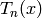
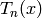

This function calculates a partial Chebyshev expansion

where  are the expansion coefficients and  are
Chebyshev polynomials of the first kind defined by the reccurence
relation
are the expansion coefficients and  are
Chebyshev polynomials of the first kind defined by the reccurence
relation


Coefficients  and
and  are defined to map the fitting
interval into [-1,1] interval.
are defined to map the fitting
interval into [-1,1] interval.
Chebyshev function has tree attributes (non-fitting parameters). First is ‘n’ which has integer type and sets the expansion order and creates n+1 expansion coefficients (fitting parameters). The parameter names have the form ‘Ai’ where ‘A’ is letter ‘A’ and ‘i’ is the parameter’s index starting from 0.
The other two attributes are doubles ‘StartX’ and ‘EndX’ which define the expansion (fitting) interval.
| Name | Type | Default | Description |
|---|---|---|---|
| EndX | |||
| StartX | |||
| n |
| Name | Default | Description |
|---|---|---|
| A0 | 0.0 |
Categories: FitFunctions | Background